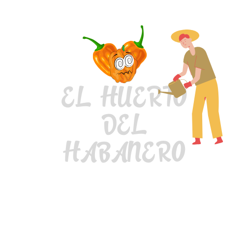

Somos los alumnos del EMSAD 29, del sexto grado grupo B, ubicados en el Poblado Morelos.
Como parte de nuestro compromiso con el aprendizaje y la comunidad, hemos creado
un proyecto educativo que combina esfuerzo, integración y sostenibilidad.
Nuestro huerto escolar es un espacio donde hemos aprendido
sobre la siembra, el cultivo y el consumo del chile habanero,
desarrollando habilidades agrícolas mientras fomentamos la convivencia y el trabajo en equipo.
Este proyecto no solo nos permite adquirir conocimientos prácticos, sino también fortalecer
nuestra conexión con la comunidad estudiantil y valorar la riqueza de la agricultura local.
Somos jóvenes entusiastas que creen en la importancia de aprender haciendo
y en el impacto positivo de trabajar juntos para construir un mejor futuro.
*-_-*-_-*-_-*-_-*-_-*-_-*-_-*-_-*-_-*-_-*-_-*-_-*-_-*-_-*-_-*-_-*-_-*
Alumnos:
Irving Guillerno Arias Montero
Josué Isaac Lopéz Arias
*-_-*-_-*-_-*-_-*-_-*-_-*-_-*-_-*-_-*-_-*-_-*-_-*-_-*-_-*-_-*-_-*-_-*